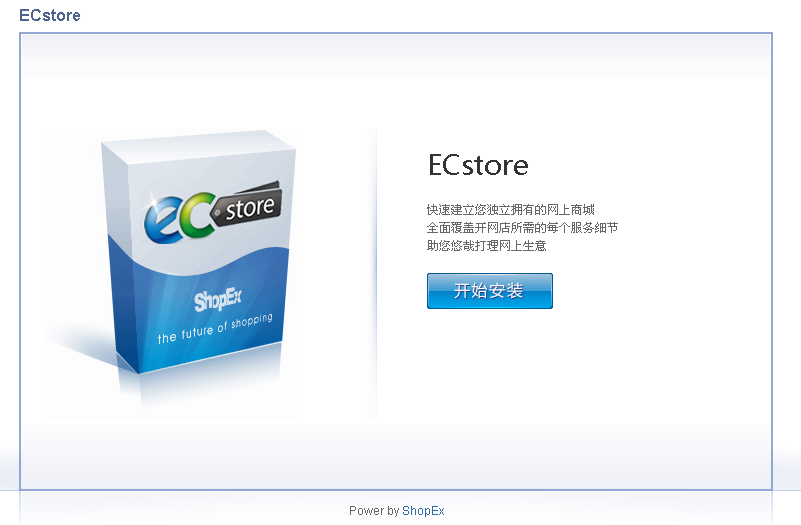

ECStore安装部署手册
ECStore系统安装环境说明
与一般的软件不同，运行ECStore需要特殊的环境支持，如果环境不适合，则安装会无法进行。本小节包括4部分，通过本节说明，您可以了解到ECStore运行的具体环境要求与参数。
- 安装环境要求
- php环境下必须要启用的函数
- Nginx下配置环境的需求
- 目录结构说明
安装环境要求
- 服务器环境：Linux、Unix均可，推荐Linux
- Web环境：Apache、Ngix均可，推荐Apache
- 语言环境：PHP 5.3.0 及以上
- 数据库：MySQL 5.0 及以上（如果采用MySQL数据库）
- 其他：Zend Guard Loader 5.5.0及以上
推荐使用软件环境：Linux + Apache2.2* + PHP5.3* + MySQL5.1*
PHP环境下必须要启用的函数
在Php配置文件php.ini中设置开启如下函数，如果不开启，则某些功能会有影响
- allow_url_fopen，
- GD扩展库
- MySQL扩展库
- 系统函数 —— phpinfo、dir
Nginx下配置环境的需求
ECStore采用pathinfo做资源定位，所以要求$_SERVER环境变量中必须要有PATHINFO或则ORGI_PATHINFO一般在apache或者iis下都没有什么问题，但是在nginx下需要对配置文件做一些设置才可以这些设置主要是在php fast cgi的配置文件中，设置代码为
set $real_script_name $fastcgi_script_name;
if ($fastcgi_script_name ~ "(.+?\.php)(/.+)") {
set $real_script_name $1;
set $path_info $2; }
fastcgi_param SCRIPT_FILENAME $document_root$real_script_name;
fastcgi_param SCRIPT_NAME $real_script_name;
fastcgi_param PATH_INFO $path_info;
基本目录结构说明
- /
- ../app 基于ECOS框架上建立的所有的app的集合
- ../config 系统配置文件目录，需要设置为可写
- ../data 系统运行过程中产生的数据缓存
- ../public 用于存放上传的图片、文本
- ../themes 存放ECStore的模板文件
单机环境下安装ECStore系统
ECStore系统只有安装后才可以正常使用，一般情况下只要满足如下三个条件就可以正常安装了。
- 能够支持ECStore系统运行的系统环境：php环境、mysql环境。
- 一个可以访问到系统的域名。
- 拥有服务器FTP权限或者SSH权限、数据库信息。
linux环境搭建
请参照笑大师，笑的艺术之lnmp http://ec-os.net/xbox/linux/ubuntu/lnmp.html
获得ECStore系统安装程序
通过ShopEx网站提供的链接或通道，获得ECStore安装程序，并解压做好上传准备。
获得服务器FTP权限或者SSH权限及数据库信息，并上传代码准备安装
一般系统运维人员会给出服务器的FTP权限或者SSH权限供您上传代码文件，登录服务器后，将文件正确的传输到系统设定的web目录下。如果采用FTP方式传输文件，请注意文件必须使用二进制模式传输。
开始安装
- 输入绑定的域名开始安装

- 点击“开始安装”，跳出“协议对话框”，点击“同意协议并下一步”

- 请填写相应的数据库配置信息以及管理员账户的设置

说明： (1).如果数据库信息不正确，此界面中不会出现数据库名，需要与系统运维确认。 (2).此处设置的管理员拥有系统最高权限。
- 安装过程画面
- 安装完成，填写ShopEx通行证


- 安装完成
- 邀请码
附（邀请码申请方式）：
1、将需求邮件发送到：ctp@shopex.cn（接口人：郑哦秋，项目管理经理/紧急联系方式：18616792168/13918554853）
2、邮件需注明以下信息：
a、邀请码申请用途
b、使用多少时间（例：从2011-12-06～2012-12-06）
c、ECStore产品版本号（选填）
d、申请人（公司）
3、邀请码将在收到申请邮件后，1工作日内发送到申请者邮箱。（如1工作日后没有收到请联系接口人）
设置data目录权限
Linux下在安装ECStore时会有权限问题。所以在安装成功后还要对data目录做一番“处理”。执行以下命令：
sun@ubuntu:/www/bugfix$ sudo chmod -R 777 data/
用cmd方式进行安装
应用场景（以下场景适合用cmd方式）:
1、用户提供ssh和管理员权限； 2、web安装方式不成功； 3、认为cmd安装方式才是最好的安装方式。
cmd安装方法
- 首先要把/ecstore/base/cmd 设置为运行权限。先定位到base下，然后运行以下命令即可：
sun@ubuntu:www/bugfix/app/base$ sudo chmod 777 cmd
- 在项目base目录下输入./cmd install b2c 开始安装
sun@ubuntu:/www/bugfix/app/base$ ./cmd install b2c 1. 数据库主机 localhost 2. 数据库用户名 roots 3. 数据库密码 (empty) 4. 数据库名 5. 数据库表前缀 sdb_ 6. 默认时区 (北京时间) 北京、重庆、香港、新加坡 ________________________________________ 输入项目编号,或输入井号"#"确认:
- 在出现的数据库信息列表中,输入4，选择一个要安装的数据库
输入项目编号,或输入井号"#"确认:4 选择合适的数据库名: 1. information_schema 2. mysql 3. ecstore 输入合适的数据库名编号:
- 输入3,按回车
1. 数据库主机 localhost 2. 数据库用户名 root 3. 数据库密码 (empty) 4. 数据库名 notebook 5. 数据库表前缀 sdb_ 6. 默认时区 (北京时间) 北京、重庆、香港、新加坡 ________________________________________ 输入项目编号,或输入井号"#"确认: #
- 回到最开始的菜单，我们输入#继续安装。
... Scanning local Applications... ok. Application libaray is updated, ok. Application base installed... ok. notebook "zh-cn" language resource stored Application notebook installed... ok.
- 在下面的交互框中输入后台超级管理员的用户名和密码
1.用户名 admin 2.密码 (empty) 3.重复密码 (empty)
- 分别输入2，3后输入密码和重复密码后按回车
1.用户名 admin 2.密码 ***** 3.重复密码 ***** ________________________________________ 输入项目编号,或输入井号"#"确认:
- 输入#继续安装
... Installing widgets b2c:im Installing widgets b2c:goodscat Register b2c meta Initial b2c Init b2c member Application b2c installed...ok.
- 经过以上步骤后，ecstore就安装成功了。要安装体验数据请看下面文档。
安装体验数据
- 输入以下命令，开始安装体验数据
sun@ubuntu:/www/bugfix/app/base$ ./cmd install install_demodata 1.是否安装体验数据 安装体验数据 ________________________________________ 输入项目编号,或输入井号"#"确认:
- 输入1，按回车出现下面画面：
选择合适的是否安装体验数据： 1.不安装体验数据 2.安装体验数据 ________________________________________ 输入合适的是否安装体验数据编号：
- 输入编号2，按回车,回到开始的菜单按#开始安装体验数据
Import demo data ... Application demodata installed... ok.
- 稍等片刻后，体验数据安装成功。
"神器"webshell的使用
应用场景:
1、没有ssh权限。 2、web安装方式不成功。 3、想膜拜一下webshell。
请参照webshell文档 http://ec-os.net/ecae/webshell/index.html#id3